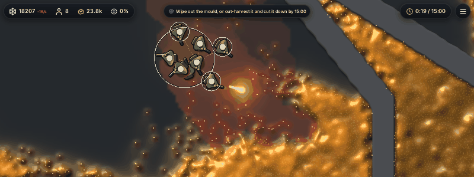
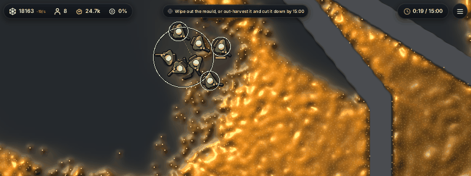
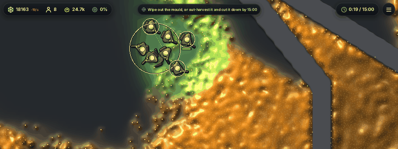

<title>Burning Scorch Trails</title>
<meta name="claude:viewport-fit-sides" content="cover">
<link rel="stylesheet" href="https://fonts.googleapis.com/css2?family=Space+Grotesk:wght@500;700&family=Inter:wght@400;600&display=swap">
<style>
/* Layout: one column of film strips, each with its counts beside it. */
:root { --bg:#f3f2ee; --fg:#1d2124; --muted:#5d6467; --panel:#ffffff; --line:#d9d6cc; --ember:#b8471c; --green:#3b8a3e;
  --display:"Space Grotesk",system-ui,sans-serif; --body:"Inter",system-ui,sans-serif; }
@media (prefers-color-scheme: dark) { :root:not([data-theme="light"]) { --bg:#121517; --fg:#e7e9e6; --muted:#9aa2a3; --panel:#1a1e21; --line:#2b3135; --ember:#f08a55; --green:#7fcf7f; color-scheme:dark } }
:root[data-theme="dark"] { --bg:#121517; --fg:#e7e9e6; --muted:#9aa2a3; --panel:#1a1e21; --line:#2b3135; --ember:#f08a55; --green:#7fcf7f; color-scheme:dark }
body { background:var(--bg); color:var(--fg); font-family:var(--body); line-height:1.55; }
main { max-width:860px; margin:0 auto; padding-block:32px 48px; padding-left:max(16px, env(safe-area-inset-left, 0px)); padding-right:max(16px, env(safe-area-inset-right, 0px)); display:grid; gap:28px; }
h1, h2 { font-family:var(--display); text-wrap:balance; margin:0; }
h1 { font-size:2rem; }
h2 { font-size:1.25rem; }
p { margin:0; max-width:65ch; }
.muted { color:var(--muted); }
figure { margin:0; background:var(--panel); border:1px solid var(--line); border-radius:6px; overflow:hidden; }
figure img { display:block; width:100%; }
figcaption { padding:12px 14px; display:flex; flex-wrap:wrap; gap:6px 14px; align-items:baseline; }
.tag { font-family:var(--display); font-weight:700; }
.tag.ember { color:var(--ember); }
.tag.green { color:var(--green); }
.counts { font-variant-numeric:tabular-nums; color:var(--muted); }
section { display:grid; gap:12px; }
table { border-collapse:collapse; font-variant-numeric:tabular-nums; width:100%; }
.wrap { overflow-x:auto; }
th, td { text-align:left; padding:6px 10px; border-bottom:1px solid var(--line); }
th { font-weight:600; }
</style>
<main>
  <header style="display:grid;gap:8px">
    <h1>Burning Scorch Trails</h1>
    <p class="muted">Larder World, 14 November. The Fork map, seed 1, eight soldiers holding at the front. Each film is 0:19 to 0:22 of the same run with a different loadout.</p>
  </header>

  <section>
    <h2>Scorch now burns</h2>
    <p>Every Scorch bullet kills the slime along its flight, as wide as its crater line. The crater it leaves is drawn on the ground as an ember that fades as the crater runs out. The ember shows exactly the cells the slime can't enter, and for exactly as long.</p>
    <figure><figcaption><span class="tag ember">Scorch + scorch</span><span class="counts">2,297 killed · 1,493 of them by the burn · mould 23,215 · 136 shots</span></figcaption></figure>
    <figure><figcaption><span class="tag">Plain bullets</span><span class="counts">678 killed · mould 24,651 · 156 shots</span></figcaption></figure>
  </section>

  <section>
    <h2>Alarm is visible, and the default slime ignores it</h2>
    <p>Alarm is now drawn as a green haze, straight from its field. Filming it showed that the default slime does not react to alarm at all: this run's counts match the plain run exactly. Only the Sleeper, Swarmer and Grudge tiers respond, and they walk toward it. What the Alarm card should become is your call, on the card in the thread.</p>
    <figure><figcaption><span class="tag green">Alarm</span><span class="counts">678 killed · mould 24,651 · 156 shots (the same as plain)</span></figcaption></figure>
  </section>

  <section>
    <h2>Counts at 0:22</h2>
    <div class="wrap"><table>
      <thead><tr><th>Loadout</th><th>Mould</th><th>Killed</th><th>Burned</th><th>Shots</th><th>Trail bursts</th></tr></thead>
      <tbody>
        <tr><td>plain</td><td>24,651</td><td>678</td><td>0</td><td>156</td><td>0</td></tr>
        <tr><td>scorch + scorch</td><td>23,215</td><td>2,297</td><td>1,493</td><td>136</td><td>1,892</td></tr>
        <tr><td>alarm</td><td>24,651</td><td>678</td><td>0</td><td>156</td><td>1,424</td></tr>
      </tbody>
    </table></div>
    <p class="muted">These counts come from one seed, so they're a tuning note, not a result. They were rendered on the cloud's software GPU, and the burn's frame cost hasn't been timed on the 1070 yet.</p>
  </section>
</main>
